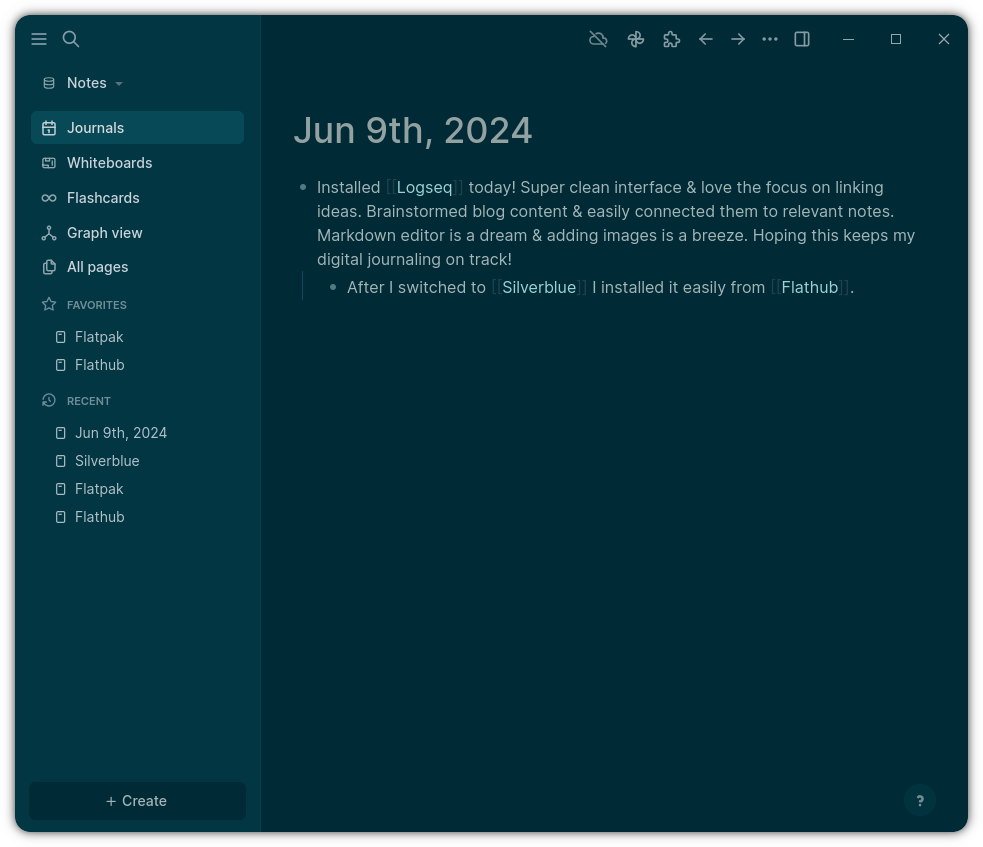
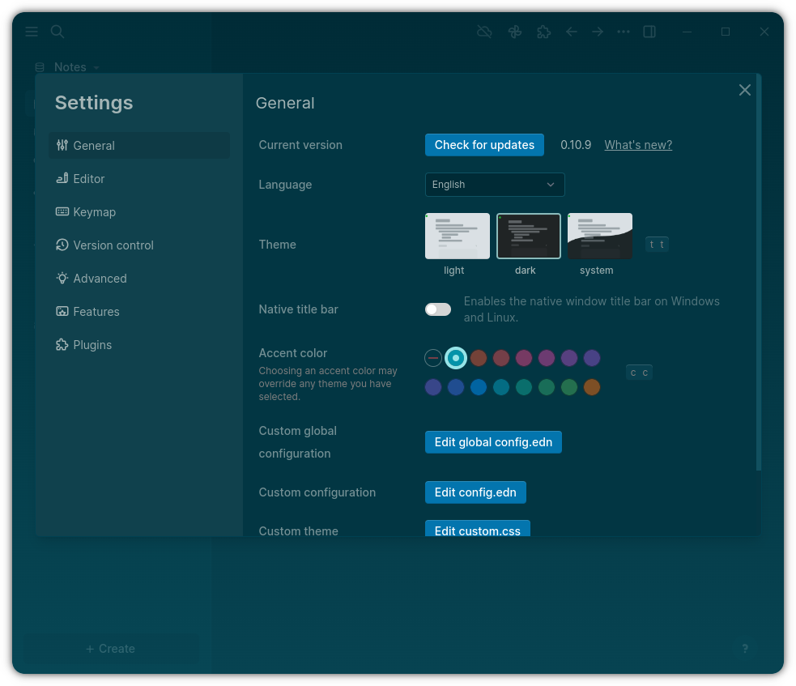

Logseq 深度评测：块式大纲笔记的另一条路
用过 Obsidian、Roam、Notion 之后回到 Logseq，发现它在写作流不中断、PDF 批注闭环、模板块复用这三件事上有别的工具没做到位的地方。
定位：块式笔记类目里的"偏科生"
双向链接笔记这个赛道，市面上大致分三档：Notion 这种全栈式大厂方案，功能多但重、对本地文件不友好；Obsidian 这种本地优先插件生态派，灵活度高但很多高级功能要自己拼插件；还有 Roam Research 开创的块引用流派，但 Roam 的订阅模式和在线定位让不少人望而却步。
Logseq 站在第二档和第三档的交界线上——可以去Logseq官网看看它的整体设计思路。它是本地 Markdown 文件，块引用是原生的，不依赖插件，但整体形态又不像 Obsidian 那样散，默认的大纲编辑 + 右侧面板组合给了一种"开箱即用就够好用"的感觉。很多人把它当成 Obsidian 的备选或者轻量版，我用了几个月之后的感受是：它不是备选，是另一条路——选它的人和选 Obsidian 的人，写笔记的思维模式本身就不太一样。

三个差异化：别的工具没做到位的地方
不中断写作流的右侧面板
我用过的所有笔记工具都有侧边栏，但 Logseq 的右侧面板设计思路是独一份的。Obsidian 的侧栏偏导航，Roam 的右面板偏预览，而 Logseq 的右侧面板是一个常驻副屏——你可以在主编辑区写 A 页面，同时在右侧面板里 Ctrl+点击打开 B、C、D 页面浏览素材，甚至直接在面板里临时编辑块引用的源内容。
这听起来像是个小功能，但对写长文的人来说是杀手级的。我以前写综述类笔记，素材分散在十来个页面里，在别的工具里就得反复切标签、切窗口，脑子在"写"和"找"之间来回跳，思路很容易断。Logseq 的 Ctrl+Click 把"浏览素材"这个动作完全塞到右侧面板里，主编辑区一动不动，写作流真的是连续的。
更妙的是悬浮预览——鼠标悬停在右侧面板任何块引用上，面板会实时展开那个块的完整内容，包括所有子块和属性。不需要点进去打开，扫一眼就知道这段引用的上下文对不对，判断要不要拉回来当论据用。这个细节让"写的时候顺便核对引用"这件事变得毫无摩擦。更多右侧面板的进阶玩法可以去Logseq文档里翻。
PDF 批注的闭环
这一点是我最近最惊艳的发现——Logseq 内置的 PDF 阅读器支持三种高亮（文本、区域、下划线），而且高亮数据存在图谱索引里，不是写进 PDF 文件本身。这意味着同一个 PDF 你用别的阅读器打开不会被 Logseq 的高亮污染，卸载 Logseq 前导出也能带走所有批注。
但真正的杀手功能是高亮粘贴：在 PDF 里高亮一段文字，Ctrl+C 复制，回到笔记块里 Ctrl+V 粘贴，Logseq 会自动把纯文本内容加上页码引用一起粘过来。比如论文里的一段原文，粘过来就是带 (p.5) 的引用格式，未来回看来源或者写参考文献都直接用。我现在读论文基本就是 PDF 开在 Logseq 里，高亮 → 粘贴 → 归档，一整条链路不用换工具。
模板块：用属性标记的格式复用
Obsidian 的模板要装 Templater 插件，Roam 的模板靠 daily notes 预设，Notion 有数据库模板但也是绑定在数据库里的。Logseq 的模板思路很朴素——一个设了 template:: 属性的普通块就是模板，在任意页面输入 /template 就能弹出选择器插入。
朴素不代表简陋。{{today}}、{{title}}、{{block}} 这几个内置变量覆盖了大部分模板场景，template-including-parent:: true 还能把模板块的父级标题一起带进来。我建了一个会议记录模板、一个读书笔记模板、一个周报模板，各占一个页面上的一个块，平时写新笔记时 /template 选一下就完事，格式完全一致。模板本身也是图谱里的普通页面，可以被链接、查询、改了之后全局生效。

取舍：为这些优势付出了什么
上手门槛
块式大纲编辑对 Obsidian 用户来说是熟悉的，对 Notion 用户来说有适应成本，但 Logseq 的块是行即块——每一行独立成块，用 Tab 缩进建层级，比 Notion 的 database block 更自由，比 Roam 的块引用更直接。真正的门槛不是编辑器本身，是图谱思维：页面、块、属性、双向引用这些概念要在脑子里搭起来，不然就只是把 Logseq 当 Markdown 编辑器用，浪费了它的核心能力。
纯本地的代价
Logseq 是纯本地优先的——文件全在你自己的目录里，没有云同步，安装包从下载拿就行。这对数据安全来说是好事，但跨设备同步就得自己想办法（Syncthing、Git、坚果云都行）。而且目前没有真正意义上的官方移动端 App，安卓上能用但体验不如桌面端顺滑。
生态和插件
Obsidian 的插件生态现在已经非常丰富了，Logseq 的插件体系是后来跟上的，数量和成熟度都差一截。但反过来说，Logseq 很多高级功能（PDF 批注、白板、右侧面板多标签、块属性）是原生的，装不装插件差别没 Obsidian 那么大。
选购结论
如果你写笔记的场景主要是长文写作、论文阅读、结构化思考，而且在意写作流不被打断、在意本地文件可控，Logseq 值得认真试一两周——右侧面板 + PDF 批注 + 模板块这套组合拳，我没在别的工具里见过这么顺的闭环。
如果你要的是强生态、大量插件、社区教程多，或者你已经有了 Obsidian 插件工作流，没必要换。如果你的笔记主要是日常随手记、短碎片、移动端高频使用，Notion 或者更轻量的工具可能更适合。
一句话总结：Logseq 不追求全覆盖，它就是把"本地块式大纲笔记"这一件事做透了，适合已经被 Roam/Notion 伤过心、又不想在 Obsidian 里堆插件的人。开源社区资料在 GitHub、Gitee、GitCode 都有同步，国内访问和备份都方便。